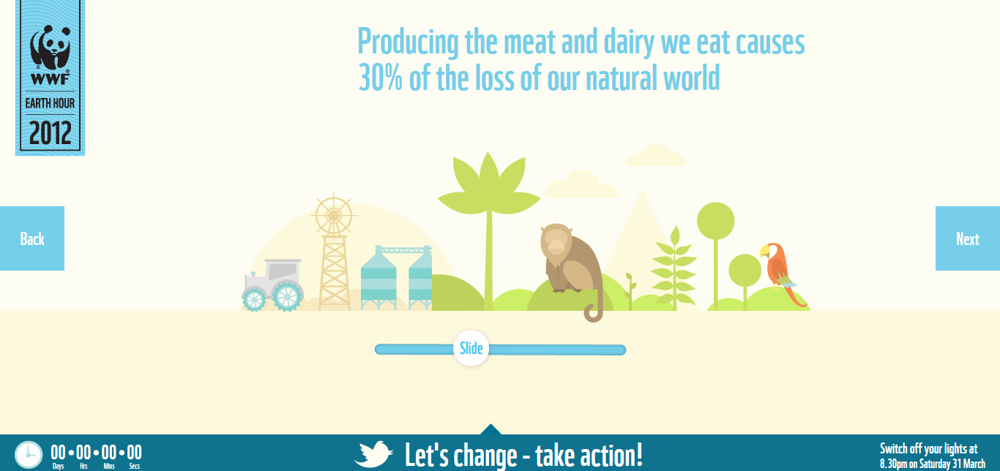
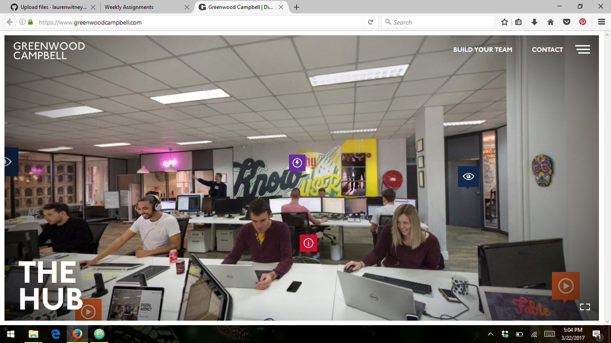

The WWF United Kingdom website is easy to use and incorporates a few interactive features. The sliding bar on the bottom can change the image to illustrate certain points. The bar is labeled "slide" so the user knows what to do. The back and next links are easily accessible and slightly expand when you hover over them.
This website allows you to pan and move around an office. It is highly interactive and engaging for the user. There are buttons to click to learn more about different topics.
